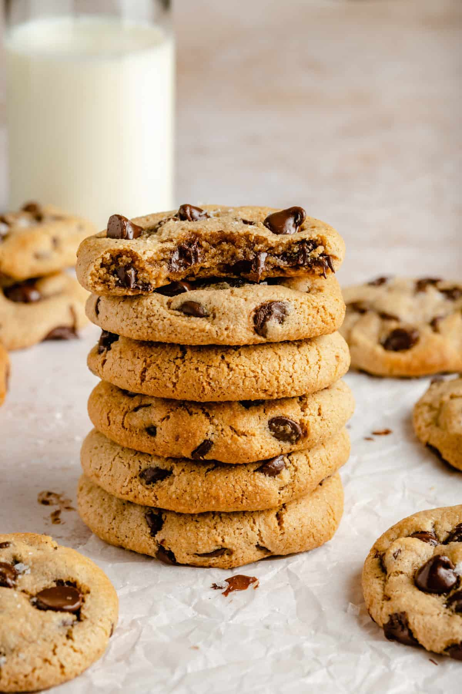

Home
Chocolate chip cookies

a type of drop cookie made with a butter and sugar dough studded with small pieces or chips of chocolate
Made with a combination of dry structural ingredients, fats, sugars, binding agents, and flavorings.
Ingredients>
- 1/2 cup melted butter
- 1/2 cup granulated white sugar
- 1/4 cup packed brown sugar
- 1 large egg
- 2 teaspoons vanilla extract
- 1 3/4 cups all-purpose flour
- 1/2 teaspoon baking soda
- 1/2 teaspoon salt
- 1 cup semi-sweet chocolate chips
Instructions
- Preheat the oven: Heat your oven to 350°F (175°C) and line a baking sheet with parchment paper.
- Mix the wet ingredients: In a large bowl, whisk together the melted butter, granulated sugar, and brown sugar until smooth.
Add the egg and vanilla extract, then stir until well combined.
- Add dry ingredients: Stir in the all-purpose flour, baking soda, and salt just until the dough comes together (do not overmix)
- Mix in the chocolate: Gently mix in the chocolate chips.
- Scoop and bake: Drop rounded 1.5 tablespoon portions of dough onto the baking sheet about 2 inches apart.
Bake for 7 to 10 minutes until the edges are golden and set, leaving the centers soft.
- Let cool: Let the cookies cool on the baking sheet for a few minutes before moving them to a wire rack.